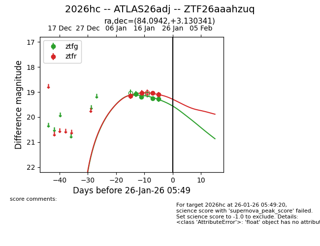
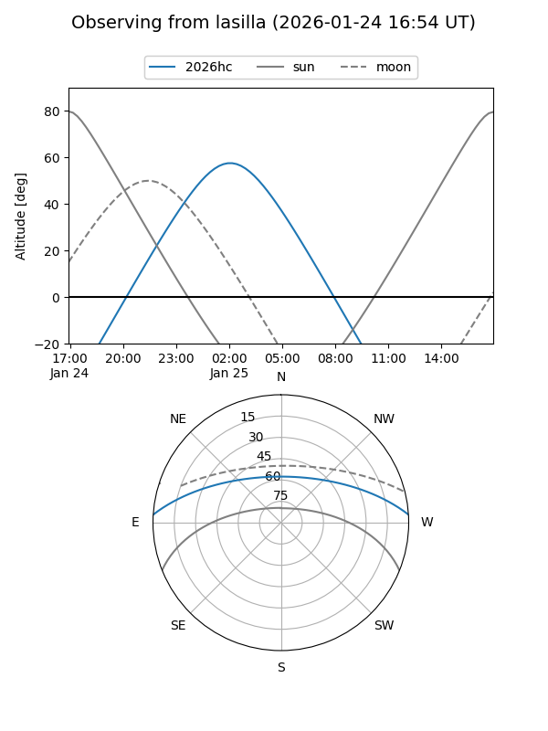
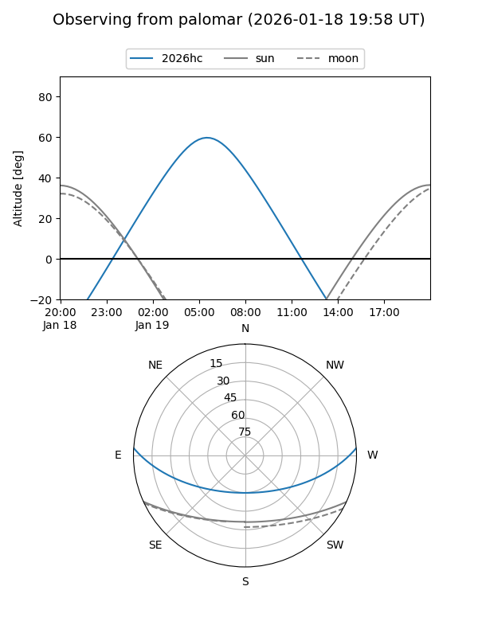
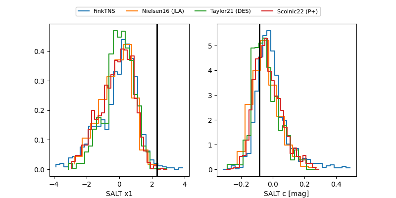

2026hc
Target 2026hc at 2026-01-23 05:21
Aliases and brokers:
FINK: link
Lasair: link
ALeRCE: link
TNS: link
YSE: link
alt names
ZTF26aaahzuq (ztf,fink_ztf)
2026hc (tns,yse)
ATLAS26adj (atlas)
Coordinates:
equatorial (ra, dec) = 84.0942,+3.13034
equatorial (HMS+DMS) = 05:36:22.61,+03:07:49.23
galactic (l, b) = (201.2739,-15.12791)
Flags:
Photometry:
last ztfg=19.28, ztfr=19.11
4 ztfg, 4 ztfr detections
Lightcurve

Visibility


Additional plots
